俗话说，进攻赢得比赛，防守赢得冠军。
防守是一支球队的基石，虽然不如进攻端那样耀眼，但一次优秀的个人防守也能赢得满堂彩
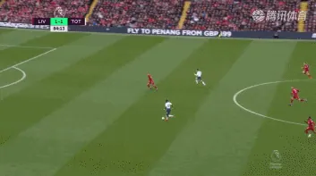
今天就来跟大家聊一聊个人防守。
我们先从1对1的情况来看。
1对1场景下，进攻球员总是占据主动的，因为进攻球员知道接下来要去哪里，会做什么样的假动作，什么时间点加速。
同等水平的1对1场景中，防守方很难在一对一中直接上去把球抢下来，直接伸脚抢球很容易就被对手一个假动作过掉。进攻方唯一的劣势是需要控球、需要持球与出球的空间。
因此，个人防守端，首先考虑的不应该是断球，而是压迫。先压迫持球方的持球空间，迫使其失误或者远离球门，其次再考虑断球的问题。
具体怎么理解呢？
中路1对1
我们先构建一个最简单的1对1场景，如下图，防守方卡在进攻方和球门之间
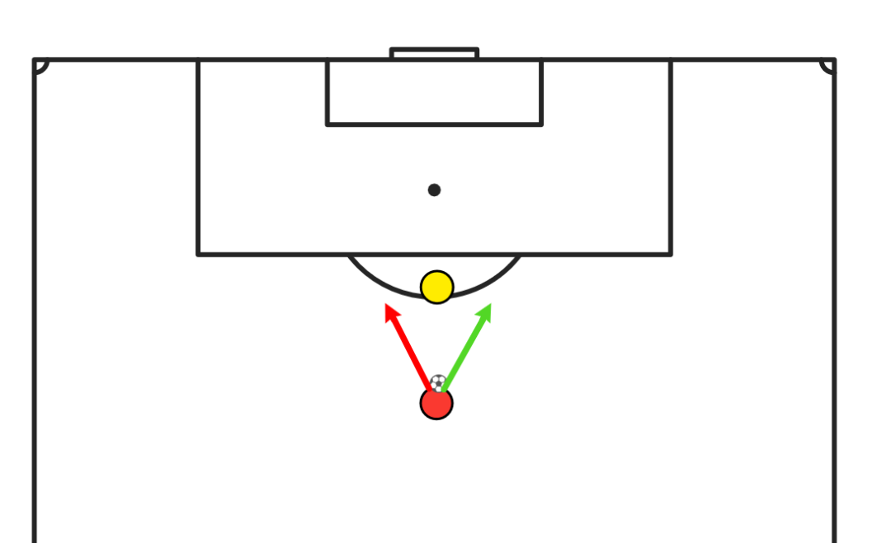
进攻方想要威胁球门，他肯定不会直愣愣的带球直接冲向防守球员，此时也只有两种选择，走防守方的左侧或者右侧绕过防守。
作为防守方，我们首先要做的，是迫使进攻方做出对球门直接威胁更低的选择。那么，那种选择威胁更低呢？
无论哪种选择，最终防守方都会从侧面靠近，进攻方需要用支撑腿和身体隔开防守球员与球，用远离对手的脚处理球，以获得更多空间。
我们假定进攻球员的惯用脚是右脚，他用右脚脚内侧与正脚背可以完成高质量的出球。如果让他从自己惯用脚的方向走，那么他的左前方，即他处理球最舒服的方向正对球门
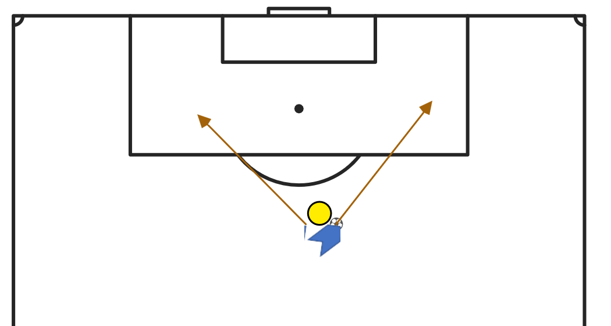
如此进攻方可以用左腿支撑身体隔开防守球员，用右脚完成高质量的直塞或射门，威胁球门
作为防守方，我们当然要想办法让对手选择另一条线路。
如此，我们可以从进攻方惯用脚一侧与其接触，迫使其使用惯用脚作为支撑腿而用非惯用脚控球。进攻方想要继续向前，则必须用非惯用脚，容易出现失误。强行使用惯用脚，会受到严重干扰，容易失误不说，其惯用脚的最佳出球方向也不是面向球门的，威胁大大降低。
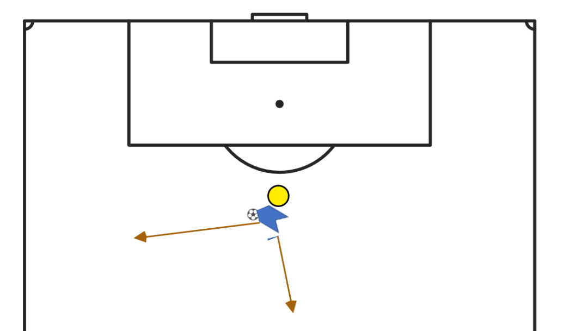
但是，进攻方不会傻傻的听我们指挥，让他走哪边他就走哪边，我们需要对其进行压迫。具体怎么做呢？
回到初始状态，首先我们要做的当然是要封住右侧的线路
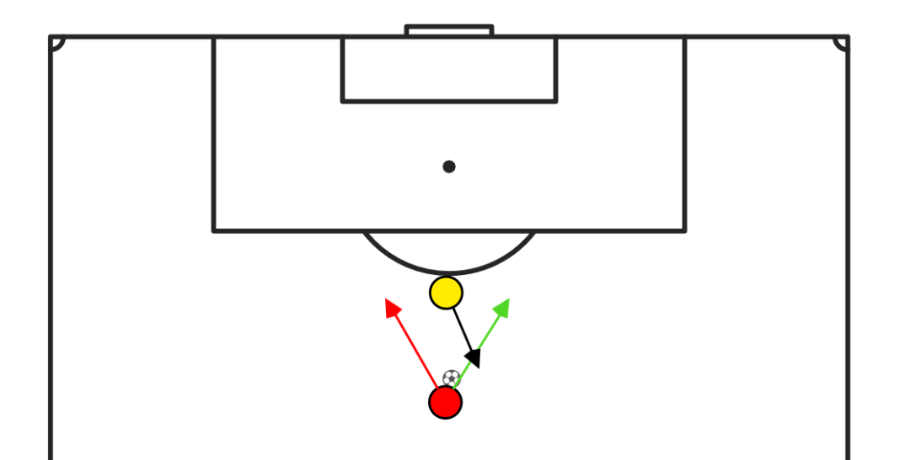
但是，我们不能走直线直接过去，因为我们封住了一侧，相当于让出了另一侧，攻方一定会加速走另一侧，我们走直线的话，是没办法反方向加速的，一定会被甩开
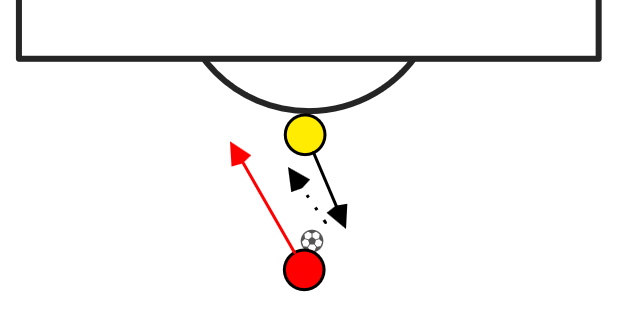
因此我们要用侧身弧线跑位的方式，以应对接下来向另一侧的加速。
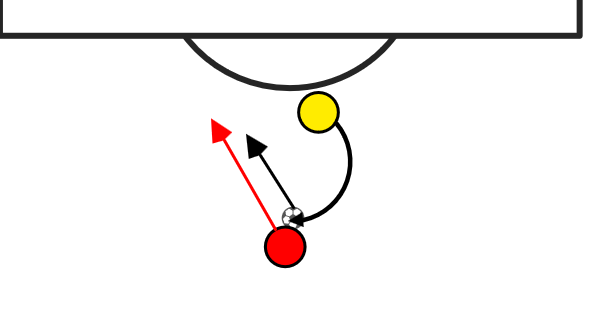
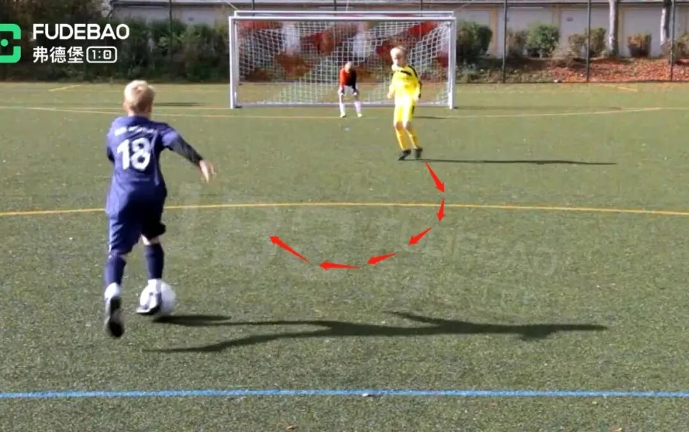
如此，完整的中路1对1防守是这样的，观察对手的惯用脚，侧身弧线跑位从对手惯用脚一侧靠近对手，再加速贴身，迫使对手用非惯用脚控球，造成对手失误完成抢断，或者逼迫对手回传。
完整动图：
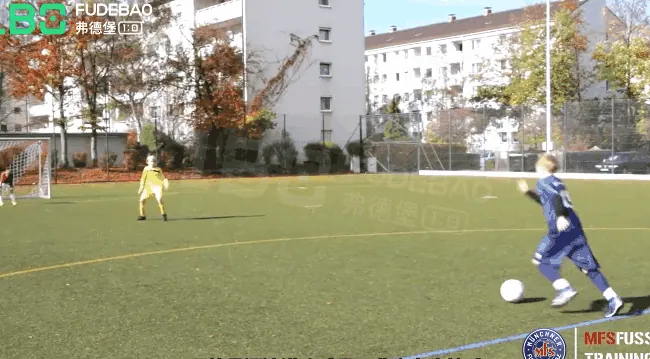
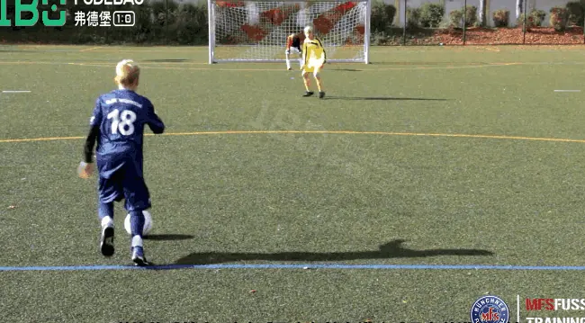
PS：这里我们也能看出非惯用脚处理球能力的重要性，非惯用脚能力强的球员很难防守，这也是慕尼黑足球学校在技术训练中一直强调非惯用脚训练的原因。
当然，实际比赛中，惯用脚只是考虑因素之一，我们真正要做的是“迫使对手做出威胁最低的选择”。
比如下图这种情况，我方这一侧有队友，即便这一侧对手是惯用脚控球，我们也可以压迫其走这一侧，配合队友进行围剿
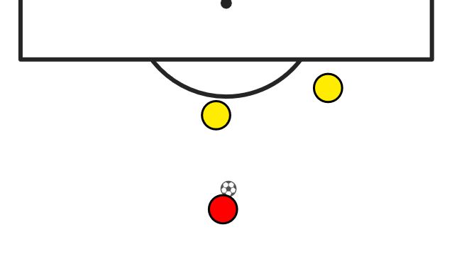
比如在边路，边线的存在，帮助我们压缩对手空间，可以把对手往边线压迫
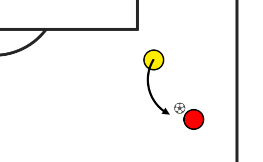
还有，1对2防守的情况，我们要优先通过弧线跑位切断两名进攻队员的联系。
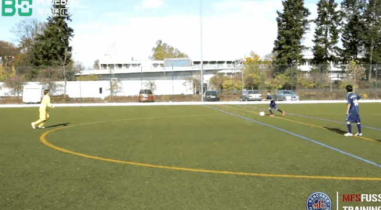
总结
个人防守的要点，在于压迫对手做出最不利于进攻的选择，迫使对手失误。
而球队的整体防守是由11个个体构成的，现代足球整体防守的核心也是压迫，通过压迫引导比赛发展的方向，引导对手把球传到没有空间的位置，从而夺得球权。
更有艺高人胆大的球队，会通过引导式压迫让比赛发展到预先设定好的陷阱之中。
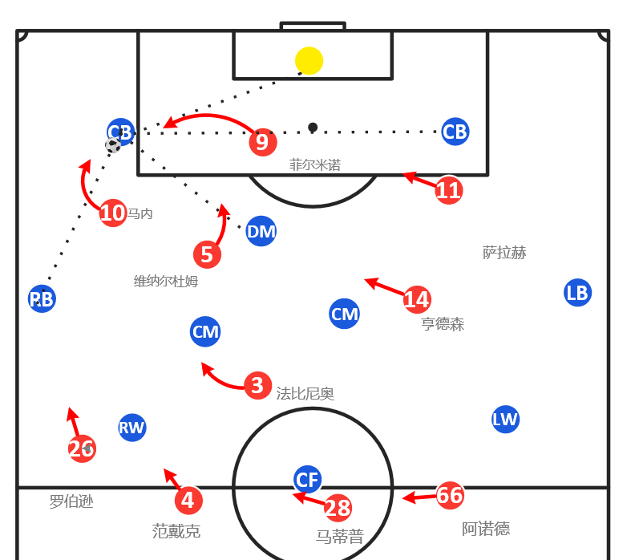
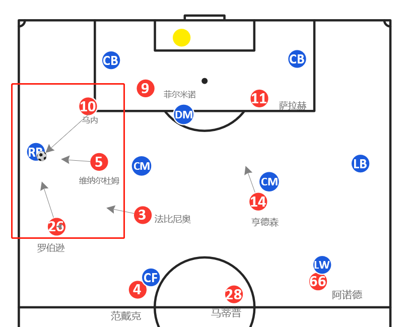
受篇幅限制，这些将在未来的文章中与大家分享。
更多足球训练教案、训练心得、战术讲解，访问一比零足球小程序

同文另见：2022-09-20 原文 ↗；本站合并显示，保留两个来源。
文字与图片版权归各自权利人所有；排版根据抓取内容整理。